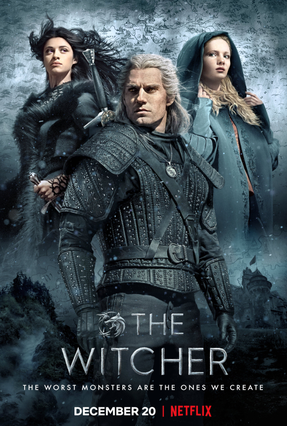
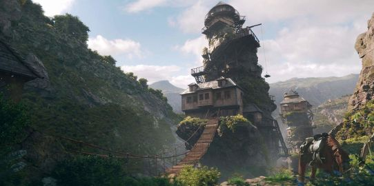
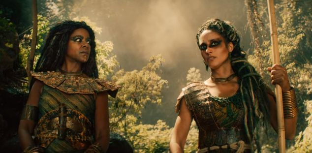
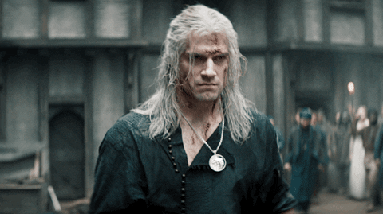
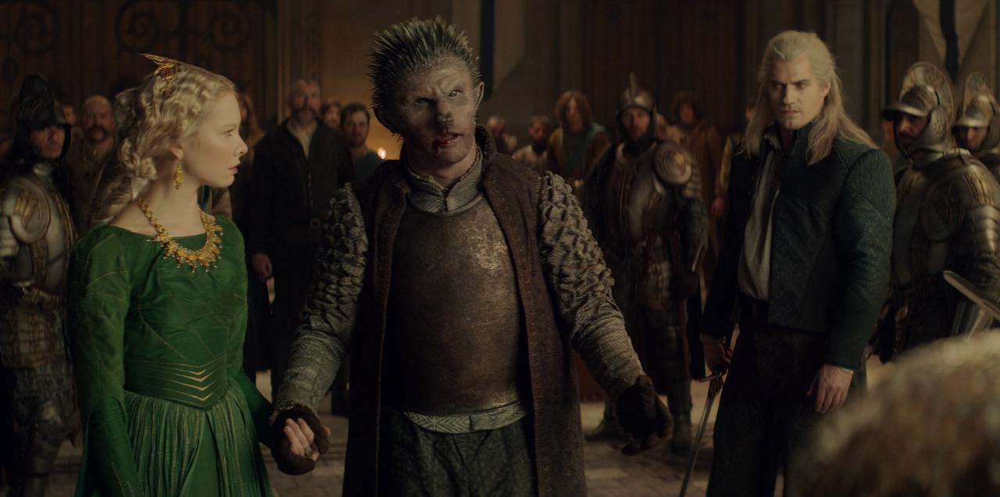
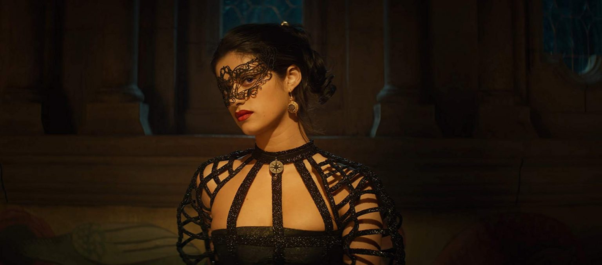

This article is about 2019 Netflix TV series. For the Polish TV series also based on Andrzej Sapkowski's works
The Witcher is an American fantasy drama series produced by Lauren Schmidt Hissrich. It is based on the book series of the same name by Polish writer Andrzej Sapkowski.
Set on a fictional, medieval-inspired landmass known as "the Continent", The Witcher explores the legend of Geralt of Rivia and princess Ciri, who are linked by destiny to each other. It stars Henry Cavill, Anya Chalotra, and Freya Allan. The show initially follows the three main protagonists at different points of time, exploring formative events that shaped their characters, before eventually merging into a single timeline.
The first season, consisting of eight episodes, was released on Netflix in its entirety on December 20, 2019. It is based on The Last Wish and Sword of Destiny, which are collections of short stories that precede the main Witcher saga. Before the first season had been released, Netflix announced a second eight-episode season, to be released in 2021; production was scheduled to commence in London in early 2020.
Context of The Witcher season 1
The convergence of the celestial sphere is about 1500 year ago before events in The Witcher is disaster that impact to multiverse in the world of the witcher makes many weid creature like vampire, monster... been stuck in dimension where Geralt living. After this event, human start meeting Elfs and learn how to use magic from them.
However, human performed a plan is called "The Great Cleansing" by massacre many of Elfs and steal these magic. Pretending that those magic are made by human.
Human in the world of The Witcher usually are not very nice, especially they are very racist. One of the creatures that human scornfully is Elfs and this conflict is shown by the episodes of The Witcher season 1. Two weird creatures usually mentioned in video game is Gnome and Dwarf are the creatures have not good relationship with human.
The Continent land
The story in the movie takes place in the land called The Continent are made by many of country, kingdom. Nilfgaard is one of the most strong kingdom starts at the south territory. This can be considered a different version of Nazi because they destroy The Continent by wars, conquest and many of land been burned. Almost all kingdom have never been fully peace except Cintra, the second strong kingdom in series.
Cintra was the strongest empire in the north and is a national counterbalance of Nilfgaard. However, they expand ambition has been shut down by the atrocities of Nilfgaard army lead to the runaway of Ciri. Besides, the other lands will be mentioned in the series including the darkness swamp covered by mist, the towns like medieval european, the enormous green mountains, the beautiful oceans and beachs, deserts, and the valleys with full of snow.
What is the Witcher?
"Cannot trust the Witcher", that is what people in the continent alway said. Witcher is a mutant species on all the land in The Witcher's world. After The convergence of the celestial sphere event, a lot of boy has been capturered into the Witcher schools, to transforms become a hunters, protect the human from monsters came by other dimension. They are many of Witcher school like Kaer Morhen, School of Wolf - where Geralt been trained, so that is why he alway carries the wolf medallion.
Witchers be seen like a bloody killer, soulless with no emotions. But at least with Geralt , he won't kill with no reason. One of the emotion that Geralt shown is special care about his horse - Roach. Special skills of Witchers is magic and potion to increase strength and senses, allow them to face with the strongest monsters. However, if Witchers been agitation they will fall to the furious massacre, even attack humans.
Ciri and relationship with Geralt
Ciri - full name is Cirilla Fiona Elen Riannon, known as "Lion cub of Cintra". Her parents died before she gets 5, and then she been raised by queen Calanthe - her grandmother. Calanthe is person who has led many of Elves massacre and alway join the battles brings fearly to enemies. Despite she is a cruel person in a battle and hardy but Calanthe loves Siri very much.
In the first and the second part of the game, Ciri only been mentioned by the speech of few characters and appears officially in the third part, about 20 years old. In the series on Netflix, Ciri just about 11. So we can see , Ciri in season 1 just can runs and runs for her undefined future before she met Geralt. Ciri is the main reason that Nilfgaad attack Cintra to take her magical power.
The connection of Ciri and Geralt started at " law of surprise" - a traditional of Cintra. If a man was saved while he near of the dead. He must gives an unknown present to the person who saved him. It maybe a child, a abundant crops... When Geralt said that he wanted to have the "surprise" present, began at that time he binded his destiny to Ciri.
Yennefer
Tissaia de Vries is an terrify witch. She usually searching for the girls, womans has an natural magic power and takes them to Aretuza school. She is in charge of training those girls to become a real witches, then they will be send to other kingdoms to make sure that all politic of The Continent will under their control - The Shaman Council. Yennefer is one of the most special students, on her appearance, personality and so she raised become one of the most ambitious students.
Like Ciri, Yennefer wasn't shown up as main characters until the third part of video game. Yennefer in the series has a lot of different than game, like her appearance, her personality. In the series, Yennefer's beauty maybe not as well as game but she has a strong personality ,wicked and more ambition. Yennefer in video game usually uses magic spells to attack the enemies, but in the series, she uses both magic and sword to fight side by side Geralt. This difference is seem to be a positive things in the series, and it make an potential Yennefer to next seasons.
Destiny, the important things be mentioned in the series The Witcher season 1
The audiences can see a word " Destiny" usually be mentioned in the series. This is an very important subject that author Sapkowski had named for his second books - The Witcher : Sword of Destiny. Basiclly, destiny of characters in the series The Witcher is inevitable and is a " two blades knives ". It makes characters thinks that they can choose their own way but turn out everything has been set up and force them to the destiny which has been planned.
Development
Andrzej Sapkowski's The Witcher book series was almost adapted into a standalone Netflix film but Kelly Luegenbiehl, Vice President of International Originals at Netflix, dissuaded the producers. She recalled asking them, "How can you take eight novels and just turn it into a film? There's so much material here. Through a number of conversations, the producers got really excited about the idea of using the source material for a longer-running series." In May 2017, Netflix announced the start of production on an English-language drama TV series based on the books.
In December 2017, it was reported that Lauren Schmidt Hissrich would serve as showrunner on the show. In April 2018, Schmidt Hissrich revealed that the script for the pilot episode was finished, and the first season would be eight episodes long. In 2017, it was reported that Andrzej Sapkowski would serve as a creative consultant on the show, but in January 2018, Sapkowski denied any direct involvement. However, he met with Schmidt Hissrich in April 2018 and in May 2018 she stated that Sapkowski was on the creative team of the project. In August, Andrew Laws was revealed as production designer. In December, Radio Times reported directors Alik Sakharov and Charlotte Brändström had joined the project.
Netflix announced a second season on November 13, 2019, with production set to begin in London in early 2020, for a planned release in 2021.
Writing
The first season was told in a non-linear manner, spanning different time periods. Hissrich said this was inspired by Christopher Nolan's 2017 film Dunkirk. She pointed out that Yennefer's story covers around 70 years and Ciri's only about 2 weeks. Hissrich also said that Yennefer and Cirilla were given more prominence to allow the viewers to understand them better. By showing their backstories, along with Geralt's, "we get down to the soul of the story. It's the story of a broken family. It's a story of three people who are on their own in the world, really orphans all living in the margins of society who are determined to not need anyone, and yet of course they do."
Hissrich said the story for the second season will build on the foundations of the first season, becoming more focused; the characters will interact with each other more frequently.
Casting
In September 2018, Netflix announced that Henry Cavill would play Geralt of Rivia. He was selected from more than 200 actors. In October 2018, Freya Allan and Anya Chalotra were cast as Princess Cirilla and Yennefer of Vengerberg respectively, while Jodhi May, Björn Hlynur Haraldsson, Adam Levy, MyAnna Buring, Mimi Ndiweni, and Therica Wilson-Read also joined. More casting was announced later that month, including Eamon Farren, Joey Batey, Lars Mikkelsen, Royce Pierreson, Maciej Musiał, Wilson Radjou-Pujalte, and Anna Shaffer.
In February 2020, Netflix announced Kim Bodnia was cast as Vesemir, an experienced witcher and a mentor to Geralt. Other additions included Kristofer Hivju, Yasen Atour, Agnes Born, Paul Bullion, Thue Ersted Rasmussen, Aisha Fabienne Ross, and Mecia Simson.
Filming
In April 2018, Schmidt Hissrich revealed that the show would be filmed in Central and Eastern Europe.
Principal photography for the first season began on October 31, 2018, in Hungary. Much of the series was filmed at Mafilm Studios near Budapest; the outdoor set included the exterior of wizard Stregobor's household. The hall in Cintra was constructed at Origo Studios on the outskirts of Budapest. Fort Monostor (Monostori Erod), and the nearby forest was used for some exterior scenes in Cintra. The Battle of Marnadal was filmed in the hills of a village in Hungary, Csákberény. The village that was Yennefer's original home was filmed at the Skanzen Village Museum, an open-air site near Szentendre some 30 kilometres (20 mi) north of Budapest; this location was also used in scenes with Ciri in an area with a windmill. The production used the exteriors of Burg Kreuzenstein, a castle near Leobendorf, Austria, for the abandoned fictional castle Vizima, but the interiors were filmed at Origo Studios.
In March 2019, production commenced on Gran Canaria, in the Canary Islands, Spain. Some scenes were to be shot on the islands of La Palma and La Gomera, as well. Scenes of the Sorcerers' Aretuza Academy (Tower of the Gull) were shot on Roque de Santo Domingo in Garafía, an islet, and enhanced with CGI. However, the interiors used for the graduation ball were at the Kiscelli Museum in Óbuda. The museum was a monastery in the 18th century. This location was also used for the conclave of the Northern Mages. The Barranco de Fataga area on Gran Canaria island was used for some scenes of arid landscapes. When Ciri was traveling in the desert, the actress was actually in the Natural Dune Reserve of Maspalomas on Gran Canaria. Most of episode six was filmed on La Palma island.
Filming of the first season concluded in Ogrodzieniec Castle in Poland. The ruins of this medieval castle, dating from the 1300s, were the backdrop for scenes including the fictional Vilgefortz of Roggeveen and Triss Merigold. The ruins were also included when shooting the Battle of Sodden Hill in the final episode of Season 1. Filming for the first season wrapped in May 2019.
Filming for the second season took place in London in early 2020, but was halted for two weeks in March due to concerns over the 2019–20 coronavirus pandemic. Actor Kristofer Hivju confirmed he tested positive for the virus responsible, COVID-19.
Music
The original song "Toss a Coin to Your Witcher", composed by Sonya Belousova and Giona Ostinelli and sung by Jaskier (Batey) in the second episode, became a viral hit shortly after the series' release. Users have created mods to patch the song into the video game adaptions of The Witcher.
In April 2019, Netflix's Ted Sarandos told investors in an earnings call that the series would be released in late 2019. The series premiered on December 20, 2019.
Marketing
Netflix released the first teaser for the series at San Diego Comic-Con on July 19, 2019. The first full trailer was revealed at Lucca Comics & Games on October 31, 2019. Netflix released a final trailer on December 12, 2019.
Critical reception
The review aggregator website Rotten Tomatoes reported a 67% approval rating for the first season, with an average rating of 6.06/10, based on 85 reviews. The website's critical consensus reads: "Though the world of The Witcher at times feels only half-formed, Henry Cavill brings brawny charisma to a series teeming with subversive fantasy elements and dark humor." Metacritic, which uses a weighted average, assigned the season a score of 53 out of 100 based on 17 critics, indicating "mixed or average reviews".
In a positive review of the first season, Erik Kain of Forbes wrote, "If you're looking for an original dark fantasy with some horror elements, some bare skin and plenty of blood and gore (and monsters) look no further.", while James Whitbrook of io9 said, "if you are willing to sit through those trudging opening episodes, punctuated by a cool fight here or an intriguing character scene there, The Witcher slowly but surely finds itself a fantastical slice of bloody, schlocky fun." Conversely, Entertainment Weekly critic Darren Franich said, "my destiny is to never watch this borefest ever again", awarding the first season an F rating. Franich drew criticism when he confessed to watching only the first, second, and fifth episodes.
Author Andrzej Sapkowski, commenting favorably on the show, stated, "I was more than happy with Henry Cavill's appearance as The Witcher. He's a real professional. Just as Viggo Mortensen gave his face to Aragorn (in The Lord of the Rings), so Henry gave his to Geralt — and it shall be forever so." Sapkowski added, "I shall be happy if the viewers — and readers — take anything away, anything that shall enrich them in some way. Also, I sincerely hope to leave the viewers — and readers — hot. In every sense. Not tepid, not lukewarm."
Audience viewership
According to Parrot Analytics, The Witcher, in its US debut, was the third most "in demand" original streaming series, behind Stranger Things and The Mandalorian. Parrot's process measures "demand expressions", which is "its globally standardized TV-demand measurement unit that reflects the desire, engagement, and viewership of a series weighted by importance." On December 31, 2019, Parrot Analytics reported that The Witcher became the most-in-demand TV series in the world, across all platforms.
On December 30, 2019, Netflix issued a number of official lists, including the Most Popular TV Shows of 2019. The series was among the most viewed in the U.S. market, where The Witcher was ranked second among series. On January 21, 2020, Netflix announced that the first season had been viewed by over 76 million viewers on its service, within its first month of release. Netflix had recently changed its viewership metric, from 70% of an episode under the previous metric, down to two minutes under the new metric. The new metric gives viewing figures 35% higher on average than the previous one. The 76 million views in its first month based on the new metric (at least two minutes or more) is the largest for a Netflix series launch since the introduction of the new viewership metric.
Sales of The Witcher 3: Wild Hunt in December 2019 were 554% greater than those from December 2018, attributed to renewed interest in the series due to the show.
In January 2020 it was announced that Netflix is working on an animated spin-off movie named The Witcher: Nightmare of the Wolffocusing on the origin story of Geralt’s mentor and fellow witcher Vesemir. Lauren Schmidt Hissrich and Beau DeMayo are working on the movie. It is being produced by Studio Mir.
The Witcher on IMDb